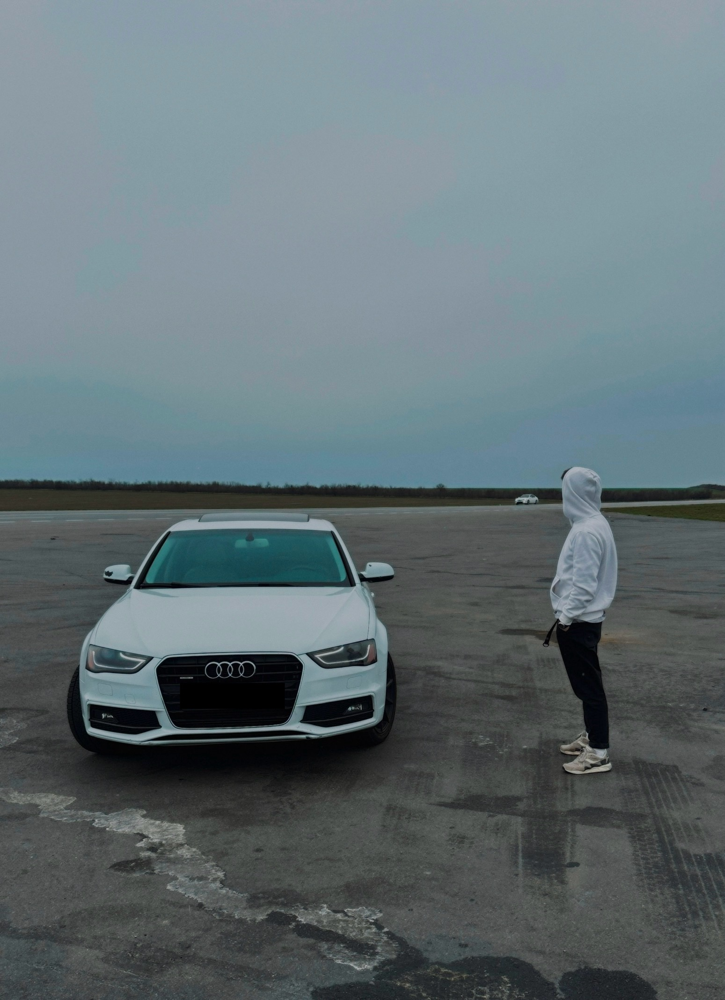

Viacheslav Sazhko

Summary
I'm a beginner web developer with a passion for creating intesting and engaging web applications. I'm also an anesthesiologist with a keen ineterest in technology and web development.
Education
- National Medical University named after O.O.Bohomolets - specialist degree.
- Shupyk National Healthcare University of Ukraine - anesthesiologist degree.
- Udemy - The Complete Full-Stack Web Developer Course.
Work Experience
- Kyiv Regional Hospital (2022 - 2023)
- Management of critically ill patients in ICU.
- Anesthesia provider during diffent types of surgical operation.
- Management of acute pain in patients during perioperative period.
- Feofaniya Clinical Hospital (2022 - present)
- Anesthesia provider during diffent types of surgical operation.
- Management of acute and chronic pain syndrome in patients with combat trauma.
Skills
- Multi-tasking
- Communication
- Purposeful
Other
Contact Me
My Instagram